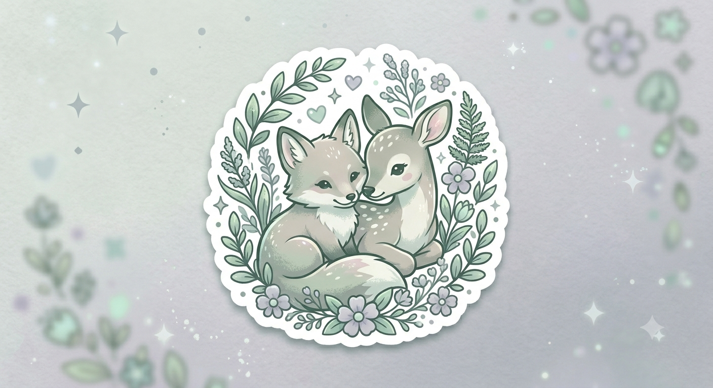

Hello to anyone reading this!
This is my first HTML page. For now, I'm just playing around and getting the hang of things. I'll be summarizing whatever I read on an AI newsletter called The Neuron! It sounds fun, and I'll also be able to play around with the basic components of an HTML...just like in the "good old days!"

5/5/2026: The day we've all been waiting for has arrived! AI CAN SPOT CANCER!!!
So, turns out Mayo Clinic has an AI model called REDMOD, and it can spot cancer better than human doctors. In fact, REDMOD detected pancreatic cancer 3 years before disgnosis! When given 2,000 CT scans, REDMOD managed to flag a little under 40% more scans as prediagnostic cancers than human doctors did!. This is a huge breakthrough because of how unpredictable, undetectable, and deadly cancer is.
5/18/2026: Wow, now even my CURSOR is smarter than me...
I was reading the Neuron again, and the article that caught my eye was talking about the fact that Google clearly has a lot of projects going on. They've been working on this smart cursor that is going to be on the frontlines of a new era or technology, apparently. The article said something about the cursor having AI integrated in it, so it can also gather context based on where your cursor is on a screen. Instead of having to specify your prompts, it seems like AI should be able to understand "this" and "that" based on where the cursor is pointing. Even my cursor is better at understanding social cues and context clues better than me! Talk about embarrassing!
5/25/2026: Our beloved music streaming app was smart, but now it's SMARTER
I was bored, so naturally, I did what any teen would do. Opened my email inbox, and looked up what randoms stuff AI is capable of doing now. I wasn't disappointed! We've all used Spotify before. To stream music, read audiobooks, etc etc! Turns out they've updated it! Fans can create ai-generated remixes of their favorite artists, your personal emails and notes can be turned into podcasts to listen to ("Breaking news! Your rent is overdue. 30 captivating minutes of screaming landlords! Up next, groceries!"), and now we have AI-generated audiobook voiceovers! They're monotone, but we appreciate the effort!
6/4/2026: Our BELOVED Gemini was hacked by none other than our BELOVED Whatsapp!
Today, I found out that someone managed to hack into Gemini using Whatsapp. Yes, you heard me right. Our futuristic Gemini, being hacked. By none other than our other and long-standing Whatsapp. Luckily, it wasn't a malicious cyberattack or anything. It was kind of... red teaming. People were hired by Google with basically the instructions "find any weak points in Gemini and hack them so we can know where to strengthen our design". This is actually the second time that such a hack has occured. This hacking 'technique' was called Indirect Prompt Injection. Basically, imagine recieving a normal text, like "hello! How was your weekend?" and typing a response, not knowing that beneath that normal-looking text bubble, a malicious code is running and prompting Gemini to give away personal information.